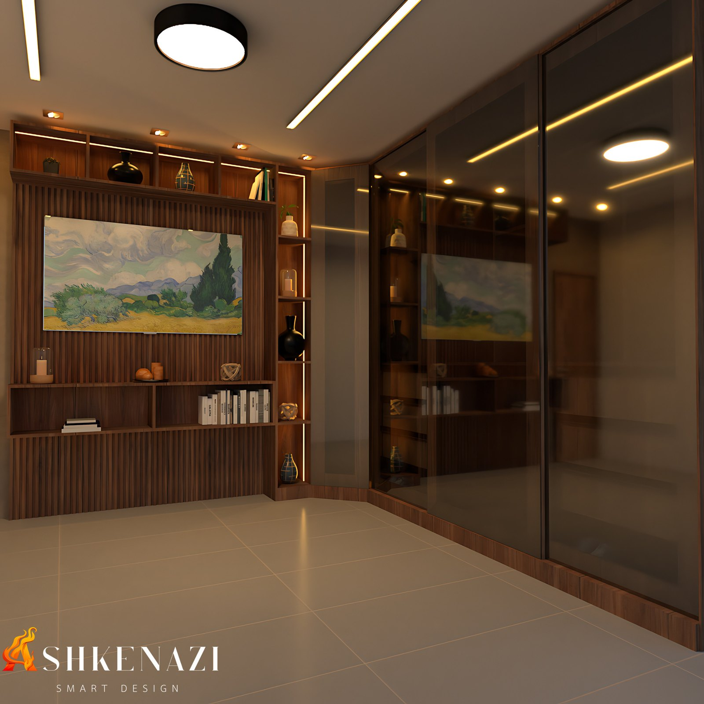
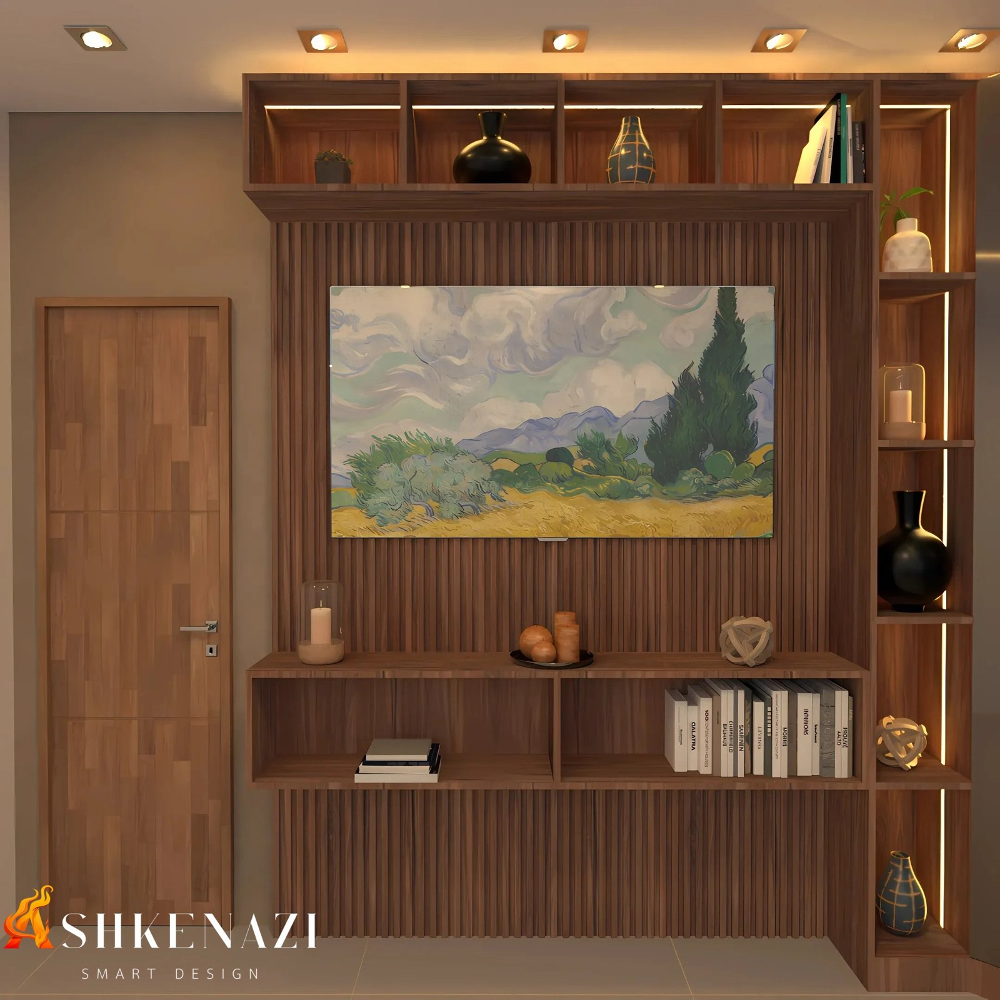

A ideia
O quarto é o lugar da casa feito para desacelerar. Este estudo parte da mesma pergunta do escritório com vista para o jardim, agora aplicada ao descanso: como o ambiente pode ajudar o corpo a relaxar e a se preparar para dormir?
A resposta combina quatro escolhas:
- luz quente e indireta à noite;
- madeira como material principal;
- uma paisagem natural como ponto focal;
- um ambiente organizado, com lugar para cada coisa.
O que dizem os estudos
- A luz antes de dormir importa. Em um estudo com 116 voluntários, ficar sob a luz ambiente comum nas horas antes de deitar atrasou o início da produção de melatonina, o hormônio que sinaliza ao corpo que é noite, e encurtou sua duração em cerca de 90 minutos, em comparação com luz baixa (Gooley et al., 2011).
- A madeira tem efeito no corpo. Em salas em tamanho real com diferentes proporções de madeira, os voluntários tiveram variações na pressão arterial ao observar o ambiente. A sala com cerca de metade das superfícies em madeira foi a mais bem avaliada em sensação de conforto (Tsunetsugu et al., 2007).
- Casa organizada, menos estresse. Pessoas que descreviam a própria casa com palavras de bagunça e de "coisas por terminar" apresentaram um padrão de cortisol, o hormônio do estresse, associado a pior saúde, e mais humor deprimido ao longo do dia. Quem descrevia a casa como restauradora, com palavras de descanso e de natureza, teve o padrão oposto (Saxbe & Repetti, 2010).
- Natureza também por materiais e imagens. O design biofílico reúne padrões de projeto que aproximam as pessoas da natureza. Entre eles estão o uso de materiais naturais, como a madeira, e as representações da natureza, como paisagens e formas orgânicas (Browning, Ryan e Clancy, 2014).
Como o conceito foi aplicado
- Iluminação em camadas:
- luz geral no teto e spots embutidos para o dia a dia;
- fitas de LED quentes nos nichos e no painel, que permitem deixar só uma luz baixa e indireta à noite.
- Madeira como protagonista:
- painel ripado de madeira na parede de frente para a cama;
- porta e marcenaria no mesmo tom;
- madeira equilibrada com piso claro e paredes neutras.
- Paisagem como ponto focal: uma pintura de paisagem natural no centro do painel, no lugar que normalmente seria ocupado pela TV.
- Organização:
- nichos e prateleiras para livros e objetos;
- armário de piso a teto com portas de vidro fumê, que guarda tudo sem pesar visualmente.
- Tons escuros e aconchegantes na roupa de cama e nos acabamentos, que reforçam a sensação de recolhimento.
Renders
 |
 |
Referências
- GOOLEY, J. J. et al. Exposure to room light before bedtime suppresses melatonin onset and shortens melatonin duration in humans. The Journal of Clinical Endocrinology & Metabolism, v. 96, n. 3, p. E463–E472, 2011. Artigo
- TSUNETSUGU, Y.; MIYAZAKI, Y.; SATO, H. Visual effects of interior design in actual-size living rooms on physiological responses. Journal of Wood Science, 2007. Artigo
- SAXBE, D. E.; REPETTI, R. No place like home: home tours correlate with daily patterns of mood and cortisol. Personality and Social Psychology Bulletin, v. 36, n. 1, p. 71–81, 2010. PubMed
- BROWNING, W. D.; RYAN, C. O.; CLANCY, J. O. 14 Patterns of Biophilic Design. New York: Terrapin Bright Green, 2014. Publicação